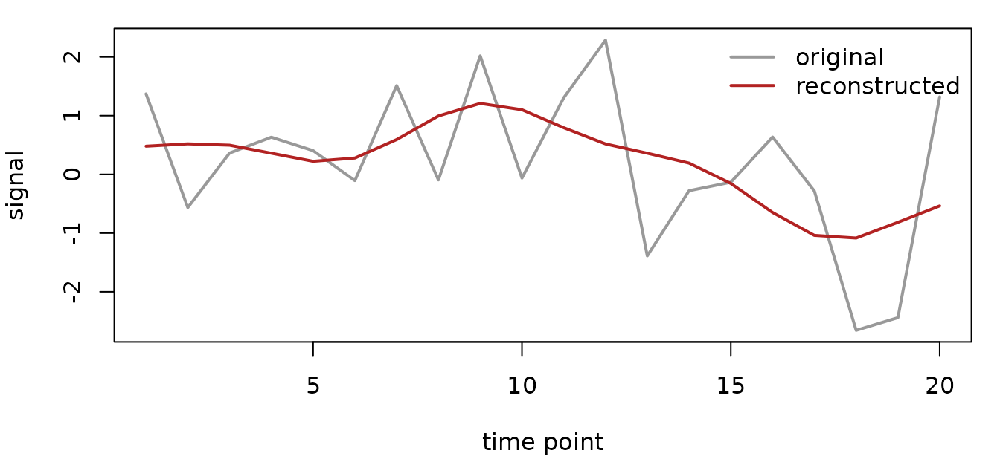

This is the on-ramp. It shows the minimal mask →
encode() → reconstruct loop and points to deeper vignettes
for everything else.
| If you want to … | Read |
|---|---|
| Understand the two latent object types | vignette("explicit-vs-implicit-latents") |
| Pick a basis family for your data | vignette("choosing-basis-family") |
| Drive the spec/encoder pipeline programmatically | vignette("encode-factory") |
Work with LatentNeuroVec objects in detail |
vignette("working-with-latentneurovec") |
| Share a spatial dictionary across subjects | vignette("shared-spatial-dictionaries") |
| Use the transport / decoder-backed path | vignette("transport-aware-encoding") |
| Compress a voxel-by-time matrix with BOLDZip-SR | vignette("boldzip") |
| Use a standalone matrix codec | vignette("standalone-codecs") |
| Inspect shared structure for BOLDZip-SR | vignette("shared-structure-boldzip") |
| Benchmark compression vs. fidelity | vignette("compression-diagnostics") |
Why fmrilatent?
An fMRI dataset is a 4D array — three spatial dimensions and time. Most of that volume is empty: air, skull, tissue outside the brain. Even within the brain mask, the signal lives in a much lower-dimensional subspace than the raw voxel count suggests.
fmrilatent exploits this structure. You choose a basis family, call
encode(), and get a LatentNeuroVec that stores
your data as a compact matrix factorization. The original data can be
reconstructed on demand — partially or fully — without ever
materializing the full dense array.
A first encoding
Compress a small simulated fMRI dataset using a temporal DCT basis:
# Build a small brain mask (4 x 4 x 4, all voxels in-mask)
mask <- array(TRUE, dim = c(4, 4, 4))
mask_vol <- neuroim2::LogicalNeuroVol(mask, neuroim2::NeuroSpace(dim(mask)))
# Simulated data: 20 time points, 64 voxels
set.seed(42)
X <- matrix(rnorm(20 * sum(mask)), nrow = 20)
# Encode with 8 DCT components
lat <- encode(X, spec_time_dct(k = 8), mask = mask_vol, materialize = "matrix")
lat
#>
#> LatentNeuroVec Object
#> ======================
#>
#> Dimensions:
#> * Spatial: 4 x 4 x 4
#> * Temporal: 20
#>
#> Components:
#> * Number: 8
#> * First component, first 5 coeffs: 0.224, 0.224, 0.224, 0.224, 0.224...
#>
#> Memory Usage:
#> * Basis: 2.4 Kb
#> * Loadings: 5.1 Kb
#> * Total: 30.4 Kb
#>
#> Sparsity:
#> * Non-zero voxels: 64
#> * Coverage: 100 %
#>
#> Space Information:
#> * Spacing: 1 x 1 x 1
#> * Origin: 0 x 0 x 0
#>
#> Data Access:
#>
#> Reconstructed Space Access:
#> * Extract volume: object[[i]] # 3D volume at timepoint i
#> * Get value: object[i] # Value at linear index i
#> * Subset: object[mask] # Values at mask positions
#>
#> Latent Space Access:
#> * Basis vectors: basis(object) # nxk temporal basis
#> * Loadings: loadings(object) # pxk spatial loadings
#>
#> Conversions:
#> * as.array(object): 4D reconstruction
#> * as.matrix(object): nxp matrix of reconstructed values
#>
#> Note: All access methods reconstruct data (X = B x L^T + offset)
#> unless you're explicitly accessing latent space.The LatentNeuroVec stores a 20 × 8 temporal basis and 64
× 8 spatial loadings — much smaller than the original 20 × 64 matrix.
The savings grow dramatically with real data: a 300-timepoint run over
100,000 voxels shrinks from 30 million values to a basis and loadings
totaling a fraction of that.
Getting data back
Reconstruction is straightforward:
# Full matrix (time x voxels)
recon <- as.matrix(lat)
dim(recon)
#> [1] 20 64
# How close is the approximation?
sqrt(mean((recon - X)^2))
#> [1] 0.7783513With 8 of 20 possible DCT components, the approximation is lossy. More components capture more variance; fewer give heavier compression.

The reconstruction (red) tracks the broad shape of the original signal (grey) while smoothing away the high-frequency detail the discarded components carried — the visible gap is the compression loss.
You can also access data selectively:
Choosing a basis
Every basis family follows the same two-step pattern: build a spec,
then call encode(). Common choices:
# Slepian/DPSS: bandlimited to 0.08 Hz, TR = 2s
lat_slep <- encode(X, spec_time_slepian(tr = 2, bandwidth = 0.08, k = 4),
mask = mask_vol, materialize = "matrix")
dim(basis(lat_slep))
#> [1] 20 4
# B-spline: 6 smooth cubic functions
lat_bs <- encode(X, spec_time_bspline(k = 6, degree = 3),
mask = mask_vol, materialize = "matrix")
dim(basis(lat_bs))
#> [1] 20 6Spatial bases compress the voxel dimension; spatiotemporal bases
(spec_st) compress both. See
vignette("choosing-basis-family") for guidance on picking
among them.
# Separable spatiotemporal: B-spline (time) + HRBF (space)
lat_st <- encode(X,
spec_st(
time = spec_time_bspline(k = 4),
space = spec_space_hrbf(params = list(sigma0 = 2, levels = 0,
radius_factor = 2.5))
),
mask = mask_vol
)
# Partial decode: only time points 1-5
partial <- predict(lat_st, time_idx = 1:5)
dim(partial)spec_st returns an ImplicitLatent
(decoder-backed) rather than an explicit LatentNeuroVec;
its predict() method accepts time_idx and
roi_mask arguments so you reconstruct only what you
need.
Quick reference
| Family | Dimension | Strengths |
|---|---|---|
| Slepian/DPSS | time | Optimal bandlimiting, minimal spectral leakage |
| DCT | time | Fast, interpretable frequency components |
| B-spline | time | Smooth, localized, adjustable flexibility |
| Slepian | space | Graph-spectral concentration on regions |
| PCA | space | Data-driven per-parcel components |
| Parcel template | space | Shared dictionary across subjects, atlas-based |
| Heat wavelet | space | Multiscale graph diffusion |
| HRBF | space | Smooth radial basis functions |
| Wavelet active | space | Mask-aware CDF 5/3 lifting, very fast |
| Separable | time + space | Compact core tensor, partial decoding |
Two latent representations
fmrilatent ships two related but distinct object types:
-
LatentNeuroVec— explicitbasis × loadings + offsetfactorization; the basis and loadings are matrices (or lazyBasisHandle/LoadingsHandlereferences). Most encoders return this. -
ImplicitLatent— decoder-backed; stores coefficients plus adecoder()closure. Returned byspec_st,encode_transport,encode_awpt, and the haar-wavelet path. Usepredict()to materialize.
Both share predict(), as.matrix(), and
meta-access generics. The operator-aware transport workflows live
entirely on the implicit-latent side; see
vignette("transport-aware-encoding") for the shared-asset +
field-operator pipeline that bridges fmrilatent and downstream modeling.
vignette("explicit-vs-implicit-latents") is the dedicated
walk-through of this distinction — read it next.
Next steps
-
vignette("choosing-basis-family")— compares basis choices on a small worked example. -
vignette("encode-factory")— programmatic spec construction and encoder discovery viaregister_encoder()/list_encoders(). -
vignette("working-with-latentneurovec")— object access, slicing, and memory tradeoffs (handles vs. materialized matrices). -
vignette("shared-spatial-dictionaries")— building a parcel- or atlas-based template once and projecting many subjects onto it. -
vignette("transport-aware-encoding")— the shared-basis + subject field-operator pipeline that integrates with downstream modeling packages. -
?LatentNeuroVecdocuments the class and its methods (basis(),loadings(),series(),as.matrix(),as.array()). -
?benchmark_roundtripcompares encoding families on your own data and hardware.